Press your AirPods to mute
During any call, press the stem once to mute and again to unmute. It even works in Chrome, where Google Meet and other web calls ignore the AirPods press.
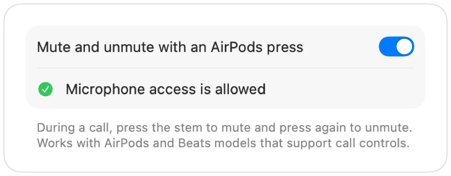

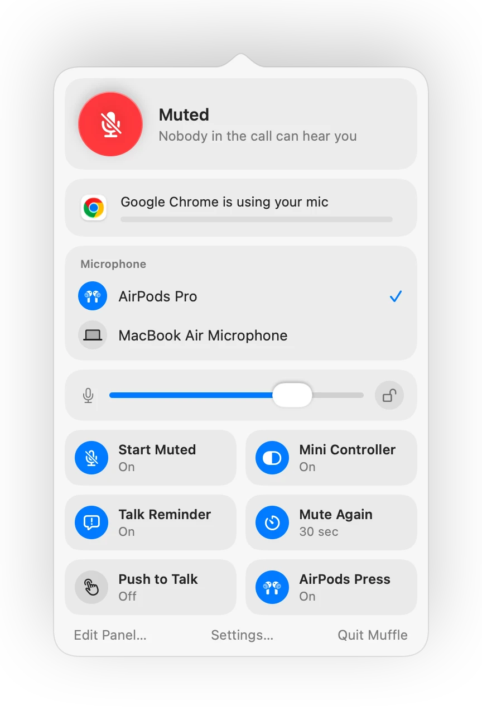
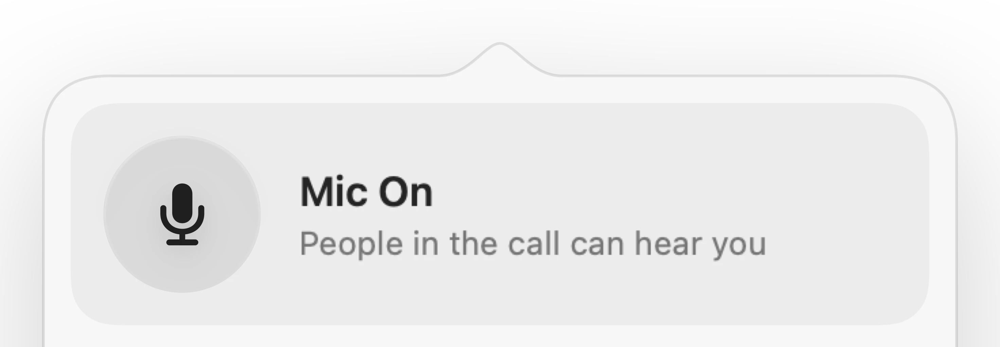
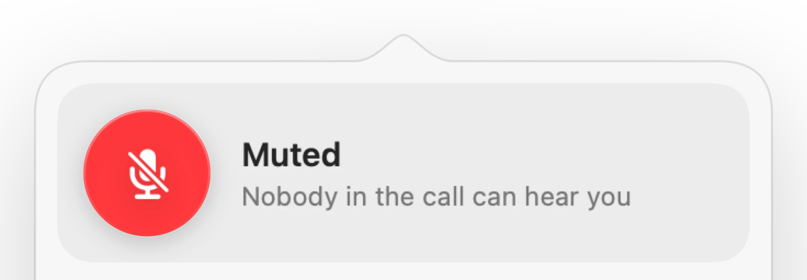
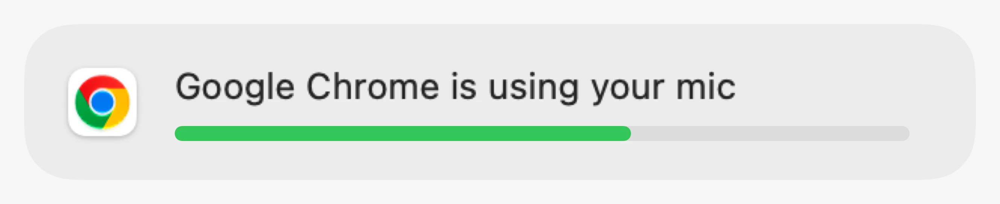
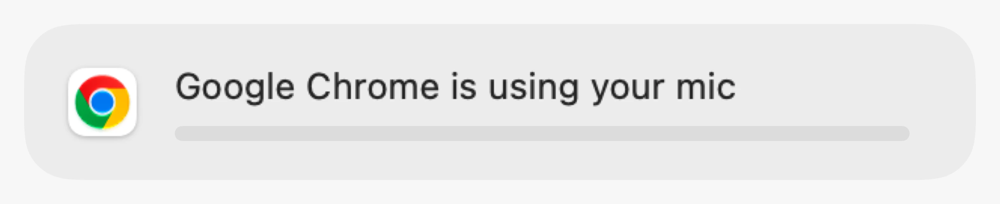
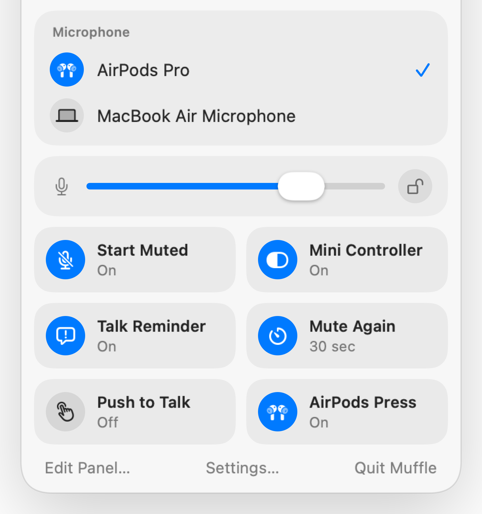
Muffle for Mac
Press your AirPods or one keyboard shortcut. Muffle turns the microphone itself off, so Google Meet, Zoom, Teams, Slack and every other app hear silence.
Free for 3 days. Then one payment, no subscription. For macOS 14 Sonoma and later.
Click the button, press your AirPods or use a shortcut. Muffle turns the microphone itself off, so every app hears silence.
Mute, pick your mic, lock its level and switch features on and off, right from the menu bar.
Every microphone on your Mac is right there. Pick one and every app follows.
Chrome, Zoom and Teams change your mic level on their own. Lock it and Muffle puts it back.
Turn features on and off right from the panel, and choose which ones sit there.
Most mute buttons only mute one app. Muffle turns the microphone itself off, so every app on your Mac hears silence.
Pick a menu bar icon: a plain one, green and red, or just a dot. Muffle can start with your Mac.
Start every call muted, unmute when it ends, mute when you lock your Mac or your headset disconnects.
Tap to toggle, hold to talk, or hold to mute. Add separate mute and unmute keys, or a talk key like Right Option.
Choose what the menu bar panel shows and which quick switches sit at the bottom.
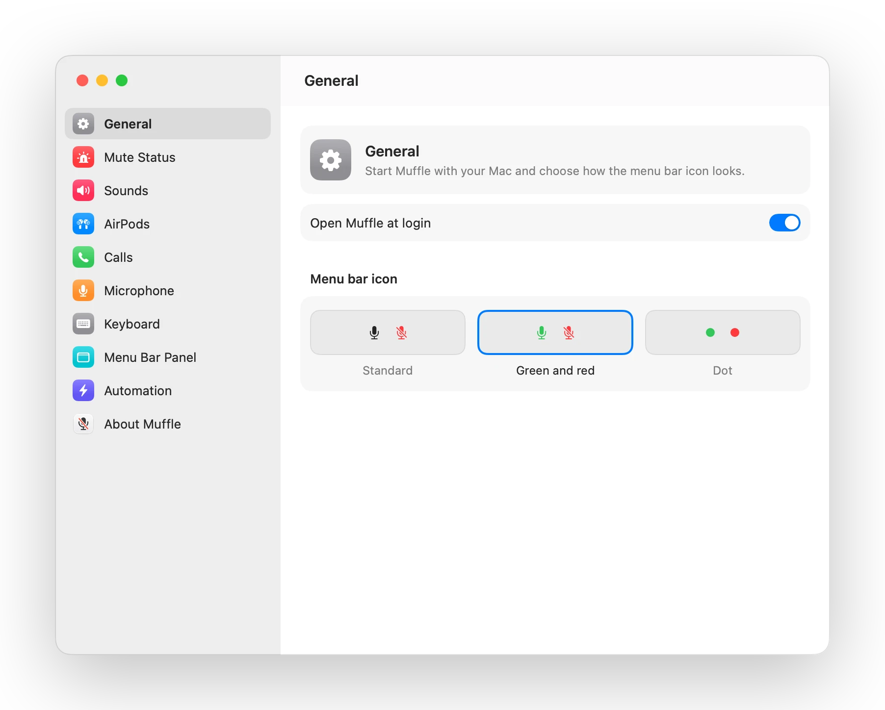
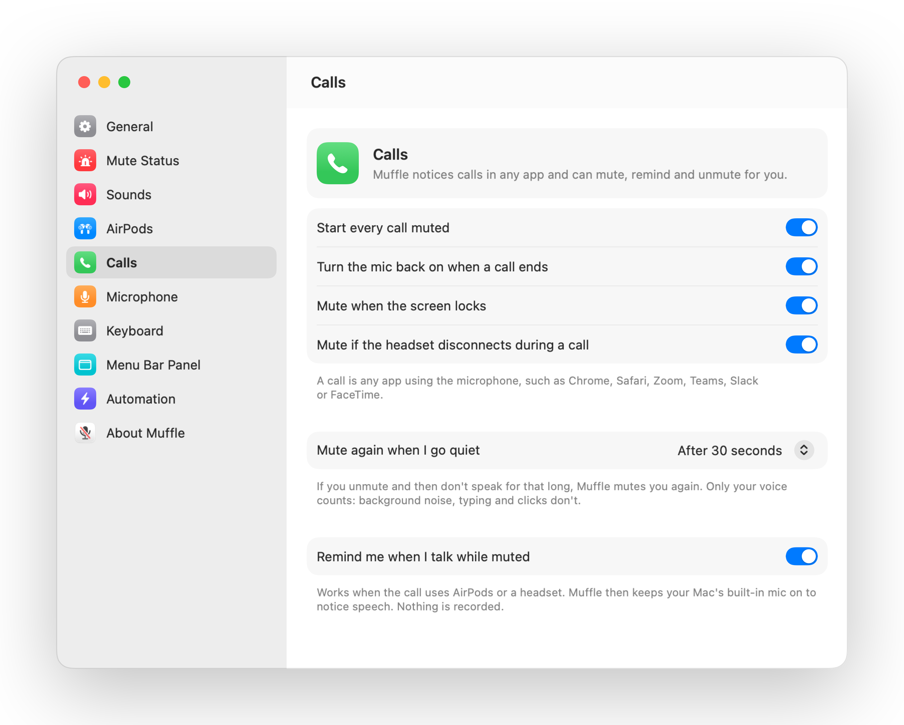
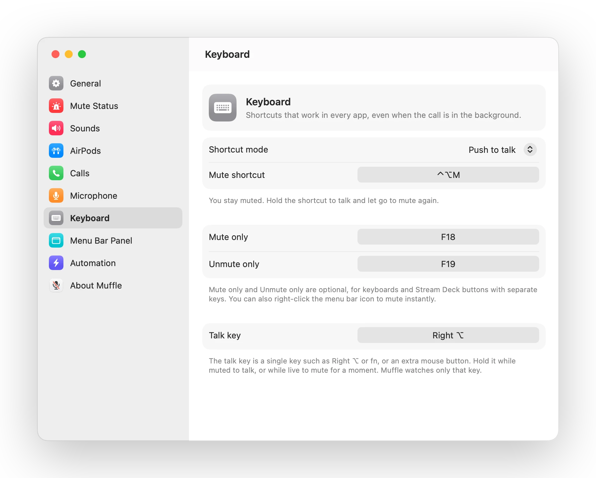
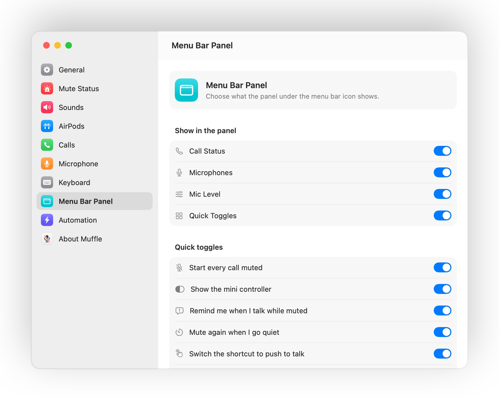
During any call, press the stem once to mute and again to unmute. It even works in Chrome, where Google Meet and other web calls ignore the AirPods press.

Start talking while muted and Muffle tells you, before you explain your whole idea to nobody.
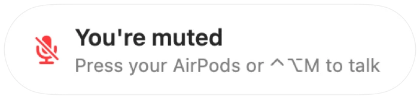
Control-Option-M mutes you everywhere, even when the call is in a background tab. Hold it to talk while muted, let go to mute again.

Chrome, Zoom and Teams change your mic level on their own. Lock it and Muffle puts it back.
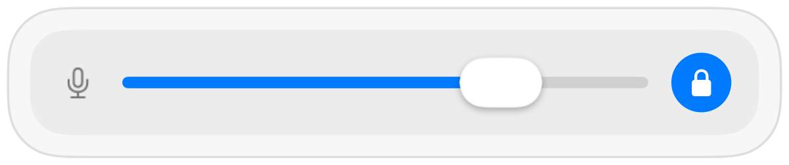
A small floating button shows your mic state during calls. Click it to mute or unmute.

Choose how your shortcut works: tap to toggle, hold to talk, or hold to mute for a cough. Add separate mute and unmute keys, or hold one key like Right Option or an extra mouse button.
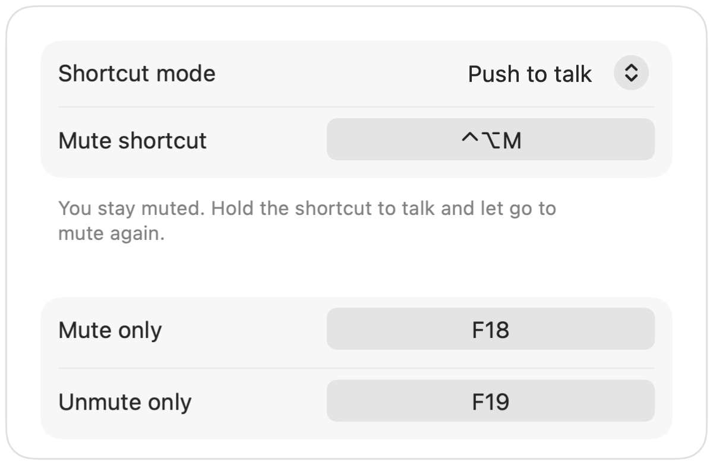
Unmuted to say one thing? If you then stay quiet for the time you pick, Muffle mutes you again. Only your voice counts, not typing or background noise.
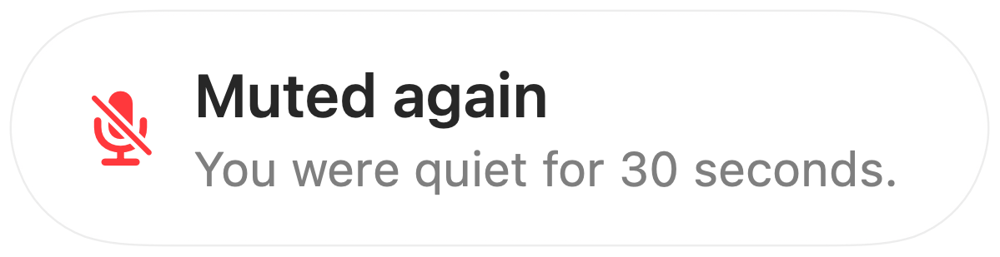
With AirPods in a quiet room, Muffle suggests your Mac's mic so the AirPods play the call in full quality. When it gets loud, it suggests the AirPods mic.
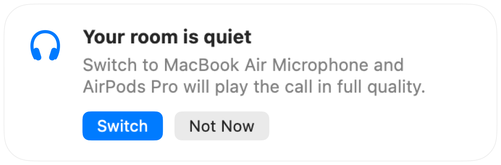
Start every call muted, turn the mic back on when a call ends, and mute whenever you lock your Mac.
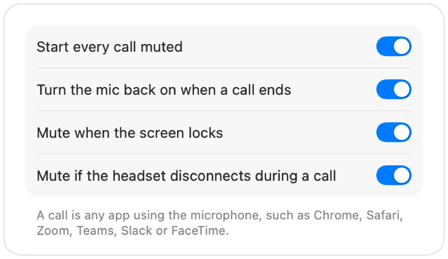
If your headset disconnects mid-call, Muffle mutes before the call switches to your Mac's mic and sends the whole room.
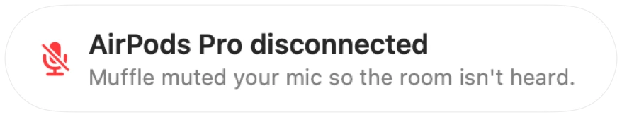
Mute from the Shortcuts app, Siri, a Stream Deck, Raycast, or a button in Control Center.
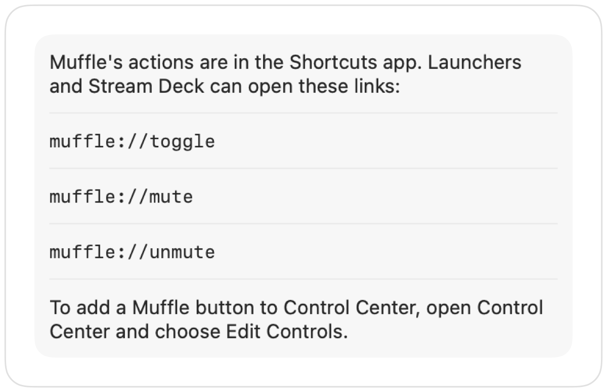
A green or red glow around the screen, a colored menu bar icon, a floating button and a sound you can switch off for each mic. Turn on the ones you like.
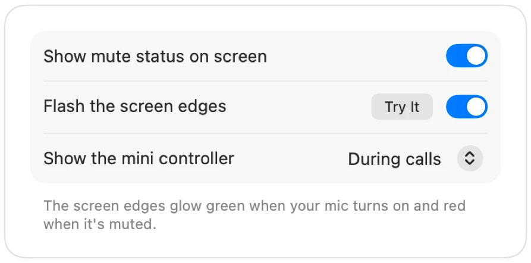
Muffle never records, stores or sends audio. It only switches your microphone on and off and reads its loudness. The app has no accounts, no analytics and no tracking.
Install Muffle from the Mac App Store and allow microphone access.
Join a call in any app, as usual.
Press your AirPods, press Control-Option-M, or click the menu bar icon to mute.
Yes. Chrome doesn't pass the AirPods mute press to web calls, so Muffle takes it and mutes the microphone itself. The same goes for any call in a browser tab.
Your call app may still show your mic as on, because Muffle switches off the microphone rather than the app's button. People hear silence either way. The Muffle icon in the menu bar turns red while you're muted.
AirPods Pro, AirPods 3 and later, and AirPods Max, plus Beats models with call controls. The keyboard shortcut and the menu bar work with any microphone.
Yes. Muffle works with every app on your Mac that uses the microphone, desktop apps and browser calls alike.
No. Try every feature free for 3 days, then unlock Muffle with a single purchase.
macOS only passes the AirPods press to apps that are using the microphone, so Muffle keeps a silent connection open during calls. Nothing is recorded.
Muffle turns your microphone back on when it quits, so you're never stuck silent.
macOS 14 Sonoma and later. The Control Center button needs macOS 26 or later.
Yes. Choose Push to talk in Settings and hold your shortcut to speak. You can also hold a single key like Right Option or fn, or an extra mouse button.
When a call uses the AirPods mic, the AirPods switch to call mode, which plays sound in lower quality. In a quiet room Muffle suggests your Mac's mic instead, so the AirPods keep playing in full quality.
No. Muffle recognizes speech with Apple's on-device sound analysis, so only talking counts. Typing, clicks and background noise don't, and nothing is recorded.
Short, practical answers for muting your microphone on a Mac, in every app.
Muffle is free to try for 3 days.